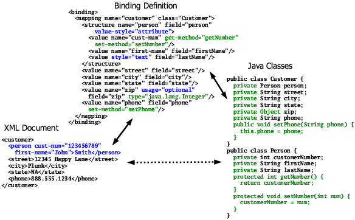
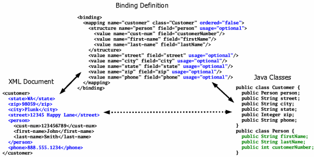

Going further with bindings |
|
Going further with bindings |
|
Variations on a themeThe first simple example only used required elements and public fields. JiBX isn't limited to just these choices, though. You can also work with optional elements and attributes in your XML, and with both fields and get/set access methods using any access level. Figure 2 gives an example of some of these features. I've shown the changes to the XML representation from Figure 1 in blue, and the changes to the Java representation in green. Figure 2. Attributes, optional, access, and more... I added value-style="attribute" to the structure
element of the binding definition in order to change the expression of the child
values in the XML from the default of elements to attributes. The
value-style attribute can be used on any of the binding definition
elements that can contain value elements. It changes the default style for
all nested value elements. The actual value element always has the
final say over its XML representation, though, using the style attribute.
In the Figure 2 binding the value definition for the The other change in the XML handling shown in Figure 2 is that I made the
zip element optional (and deleted it from the document shown). This change
is shown in the binding definition by the addition of usage="optional" to
the zip element value definition. Using everything as shown, the The access methods added on the Java side are reflected in the binding definition by the use of get-method and set-method attributes on the appropriate value elements. If both get-method and set-method are supplied there's no need to include a field name, as shown by the value definition for the customer number. You can also use a get or set method in conjunction with direct access to the field, as shown for the phone number binding. When you do this the supplied method will be used where possible, with direct field access used for storing values when only a get method is supplied, or for loading values when only a set method is supplied. I also changed the type of the For full details on the options available for the value element see the <value> element details page. Mixing it upAnother sometimes useful variation supported by JiBX is the ability to use either ordered or unordered lists of child elements. By default, JiBX assumes that elements in the XML document are in a fixed order. This allows for more efficient unmarshalling of documents, and also reflects the most-common usage of XML. For the exceptional cases where elements are not ordered JiBX allows the default behavior to be overridden. Figure 3 shows how this works, with changes from Figure 1 again highlighted in color. Figure 3. Unordered elements As compared to Figure 1, here I've added an ordered="false" attribute on the mapping element, and also added usage="optional" on all the child components of the mapping element in the binding. The first change tells JiBX that I want to use unordered child elements within the customer element. The second change, making all the child components optional, used to be required for an unordered group. As of the 1.1 release this is no longer the case, so the same binding would work if you took off the usage="optional" attributes (and would throw an exception at runtime if one of the required elements was not found when unmarshalling). I've scrambled the child elements within the XML document in Figure 3 to illustrate the unordered operation. Note that the ordered="false" setting only applies to the children of the element with the setting. In the Figure 3 example, this means that the person element of the XML document can occur in any order amoung the children of the customer element, but the children of the person element still have to be in their original order. If I wanted to change this I'd need to add the ordered="false" setting on the structure element of the binding definition and make all the child elements optional. As of the JiBX 1.1 release, you have the option of ignoring unknown elements within an unordered group. To enable this behavior you need to include a flexible="true" on the binding element containing the group (the same place you set the ordered="false"). Also as of 1.1, repeated elements within an unordered group will by default be treated as an error when unmarshalling (so if the Figure 3 sample document had a second instance of the <address> element, for instance, the runtime code would throw an exception). You can disable this checking for repeated elements by using the allow-repeats="true" attribute on the containing element. Both these options can only be used in combination with ordered="false" - if you're using an ordered group, JiBX expects the elements to be exactly as specified. See the structure attribute description for full details on these options. There's one more change I made in Figure 3, though this is a change just for
the purpose of showing that it has no effect. This is the reordering of the
fields within the |